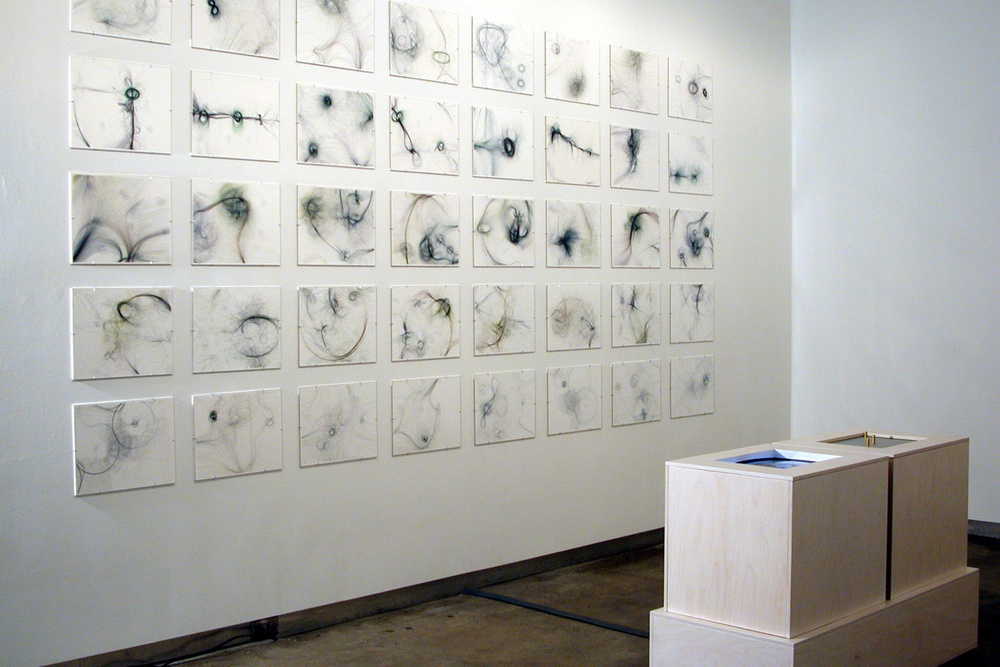

Sistemas, reglas y variación
El trabajo de Casey Reas se fundamenta en la idea de que una obra puede ser entendida como un sistema de reglas. Estas reglas definen las posibles interacciones entre los elementos visuales, permitiendo que la obra se genere a partir de su ejecución.
Este enfoque introduce la variación como un elemento central. Cada vez que el sistema se ejecuta, puede producir un resultado diferente, lo que transforma la noción de originalidad y repetición en el arte digital.
El rol del artista-programador
En la práctica de Reas, el artista asume el rol de programador. En lugar de intervenir directamente sobre la imagen final, diseña el conjunto de instrucciones que dará lugar a múltiples resultados posibles.
Este cambio de rol implica una forma distinta de pensar el proceso creativo. La autoría se desplaza hacia el diseño del sistema, mientras que la ejecución introduce elementos de autonomía y sorpresa en la obra.
Influencia en el arte contemporáneo
La obra de Casey Reas ha tenido un impacto significativo en el desarrollo del arte digital y generativo. Su enfoque ha contribuido a legitimar el uso del código como un medio artístico en el contexto contemporáneo.
Su influencia puede observarse en numerosos artistas y proyectos que adoptan el pensamiento basado en sistemas y algoritmos. A través de su trabajo, se ha ampliado la comprensión de las posibilidades del arte en relación con la tecnología.
Para contactarse escribir a: casey@artedigital.com